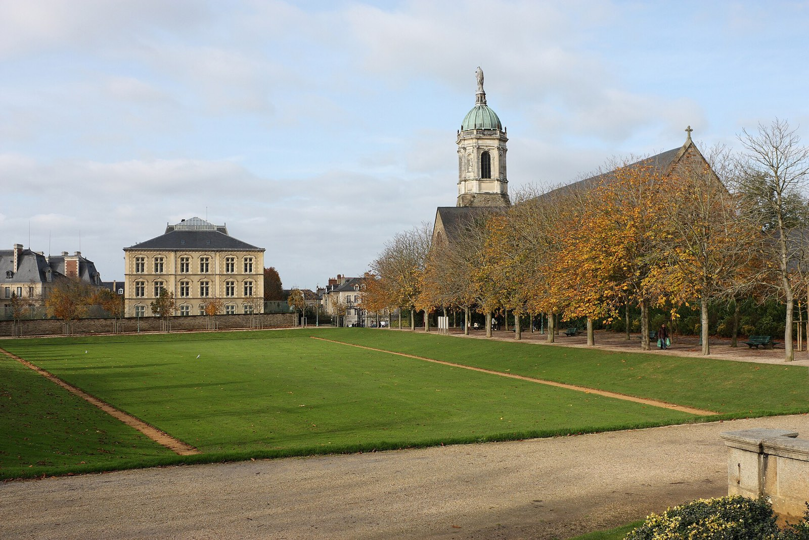

Nature & DetenteLe Parc du Thabor
Cree au XVIlIe siecle sur les anciennes douves de la ville, ce jardin de 5 hectares mele balades, jardin botanique, enclos de betail et plans d'eau. L'un des plus visites de Bretagne, il est gratuit, ombrage et offre une vraie respiration au coeur de la metropole.
- Acces : 10 min a pied de la Republique
- Ideal : familles, balades, photo
- Astuce : entrez par la porte Compgne, cote sud